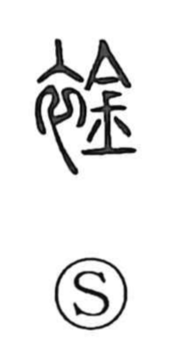

襟

Kun: eri | On: kin
collar ・ neckband ・ bosom
Explanation
This character is phono-semantic: the clothing element marks it as a garment term, while 禁 provides the sound kin and the sense of restraining or shutting in. Older forms sometimes used 金 or 今 as the phonetic; 今 originally depicts a lidded vessel and thus conveys the idea of enclosing. The core image is the collar at the base of the neck. In ancient belief the neck was the gateway of the soul, and in funerary practice the neckband was fastened to keep the soul from departing. From this notion of closing at the neck, the graph came to mean the collar itself and, by extension, one’s inner bosom—the seat of feelings and thought, as seen in words like 襟懐 and 胸襟.